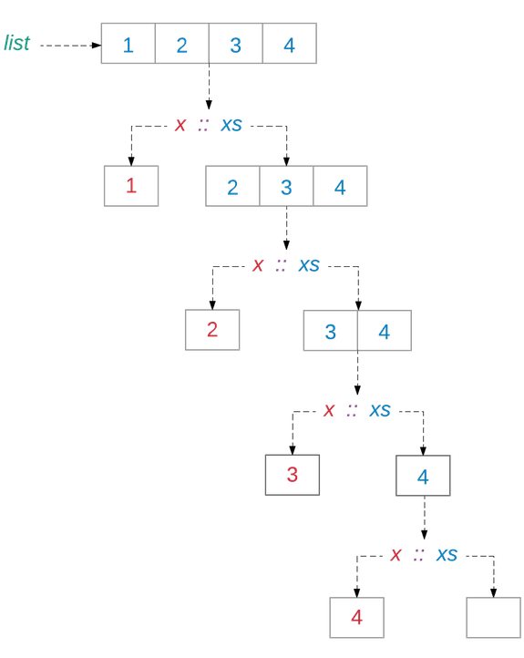
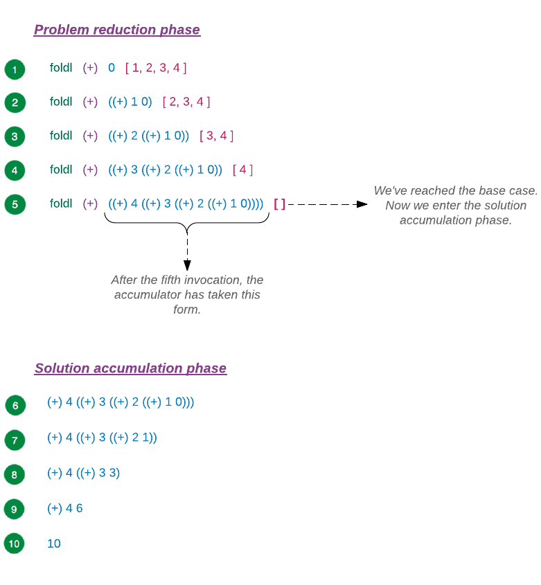

Shoda se vzorkem (pattern matching) je akt porovnávání jednoho či více vstupů s určeným vzorkem a zkoumání, zda se shodují. Jinými slovy, pattern matching je hledání shody se vzorkem. V Elmu je k disposici jenom určitá množina vzorů, jež lze porovnávat, takže pattern matching má omezené použití. V této sekci si projdeme několika příklady, abychom pochopili, jak pattern matching v Elmu pracuje.
PM ve výrazech CASE
Výraz case pracuje porovnáváním výrazu se vzorem. Je-li nalezena shoda, vyhodnotí se výraz vpravo od šipky -> a výsledek tvoří vratnou hodnotu výrazu case. Jednoduchý příkad na PM jsme viděli v sekci Výraz case.
weekday dayInNumber =
case dayInNumber of
0 ->
"Sunday"
1 ->
"Monday"
2 ->
"Tuesday"
3 ->
"Wednesday"
4 ->
"Thursday"
5 ->
"Friday"
6 ->
"Saturday"
_ ->
"Unknown day"V tomto příkladě je výrazem dayInNumber a vzorem jsou čísla 0 až 6 s žolíkem (catchcall) _ na konci. Zde je poněkud složitější příklad:
map2 : (a -> b -> value) -> Result x a -> Result x b -> Result x value
map2 func ra rb =
case ( ra, rb ) of
( Ok a, Ok b ) ->
Ok (func a b)
( Err x, _ ) ->
Err x
( _, Err x ) ->
Err xVýše uvedený kód ukazuje použití funkce Result.map2, která přijímá tři argumenty: funkci a dva výsledky. Funkce map2 používá výraz case k určení dalšího postupu v závislosti na výsledkových argumentech.
Case #1: Jsou-li oba výsledky Ok, je funkce aplikována na payloady každého Ok.
> Result.map2 (*) (String.toInt "2") (String.toInt "3")
Ok 6 : Result.Result String IntCase #2: Obsahuje-li první výsledek Err, je druhý výsledek ignorován v důsledku _ a vrací seErr z prvního výsledku.
> Result.map2 (*) (String.toInt "y") (String.toInt "3")
Err "could not convert string 'y' to an Int" : Result.Result String IntCase #3: Obsahuje-li druhý výsledek Err, je první výsledek ignorován a vrací se Err z druhého výsledku.
> Result.map2 (*) (String.toInt "2") (String.toInt "i")
Err "could not convert string 'i' to an Int" : Result.Result String IntElm nám umožňuje sáhnout do datové struktury a porovnávat vzory přímo bez psaní vnořených výrazů if a case. To umožňuje psaní kompaktního, přesto přehledného kódu.
- Poučení ze standardní knihovny
- Jedním z nejlepších způsobů osvojování Elmu je číst jeho standardní knihovnu. Velká část jejího kódu je napsaná v Elmu. Je to dobrý kód, napsaný zkušenými programátory, z nichž někteří se podíleli na vzniku Elmu samotného.
-
Vyberte si modul svého zájmu a projděte si jeho funkcemi, typy a hodnotami. Potom přejděte na Github a vyhledejte si jméno souboru, který obsahuje kód modulu, který vás zajímá. Například, kód pro modul
Listje obsažen v souboruList.elma kód pro typMaybeje obsažen v souboruMaybe.elm.
PM s enticemi
Jedním z důvodů kompaktnosti fukce map2 je to, že nám umožňuje použít entice k porovnávání složitých vzorů ve výrazu case. Takto by vypadala funkce map2, kdyby nepoužila entici ve výrazu case nahoře:
map2 : (a -> b -> value) -> Result x a -> Result x b -> Result x value
map2 func ra rb =
case ra of
Ok a ->
case rb of
Ok b ->
Ok (func a b)
Err x ->
Err x
Err x ->
Err xPozorumění kódu je zde obtížné v důsledku přílišného vnořování. Předchozí implementace je mnohem elegantnější a přehlednější. Zde je přesvědčivější případ pro použití entic ve výzazech case:
map5 : (a -> b -> c -> d -> e -> value) -> Result x a -> Result x b -> Result x c -> Result x d -> Result x e -> Result x value
map5 func ra rb rc rd re =
case (ra,rb,rc,rd,re) of
(Ok a, Ok b, Ok c, Ok d, Ok e) -> Ok (func a b c d e)
(Err x, _, _, _, _) -> Err x
(_, Err x, _, _, _) -> Err x
(_, _, Err x, _, _) -> Err x
(_, _, _, Err x, _) -> Err x
(_, _, _, _, Err x) -> Err xKód nahoře je implementace funkce Result.map5, která přijímá jako argumenty funkci a pět výsledků. Představte si, jak by takovéto zavedení vypadalo, kdyby nepoužilo entice k porovnávání vzorů. Zde je příklad na použití funkce map5:
resultMap5Example : Result String Int
resultMap5Example =
Result.map5 addFiveNumbers
(String.toInt "1")
(String.toInt "2")
(String.toInt "3")
(String.toInt "4")
(String.toInt "5")
addFiveNumbers : Int -> Int -> Int -> Int -> Int -> Int
addFiveNumbers a b c d e =
a + b + c + d + e
main =
...Přidejte výše uvedený kód hned nad funkci main v souboru Playground.elm umístěném v adresáři beginning-elm/elm-examples. Potom můžete zapsat jméno fukce do replu, abyste viděl výsledek.
> import Playground exposing (..)
> resultMap5Example
Ok 15 : Result.Result String IntPM nemůže provádět výpočet
Je důležité si uvědomit, že PM umí pouze nahlédnout do datové struktury. Žádné výpočty s dosaženými hodnotami provádět nemůže. V odstavci Výraz IF vs CASE sekce Výrazy CASE jsme zkoušeli přepsat následující výraz if výrazem case.
escapeEarth : Float -> Float -> String
escapeEarth velocity speed =
if velocity > 11.186 then
"Godspeed"
else if speed == 7.67 then
"Stay in orbit"
else
"Come back"escapeEarthWithCase : Float -> Float -> String
escapeEarthWithCase velocity speed =
case (velocity, speed) of
(velocity > 11.186) ->
"Godspeed"
(speed == 7.67) ->
"Stay in orbit"
_ ->
"Come back"Když jsme spustili funkci escapeEarthWithCase, dostali jsme následující chybu.

Obdrželi jsme syntaktickou chybu, protože jsme se při PM pokoušeli provést výpočty s hodnotami velocity a speed. Elm to nedovoluje. Potřebujeme-li provést výpočty před PM, můžeme to udělat uvnitř výrazu let.
escapeEarthWithCase : Float -> Float -> String
escapeEarthWithCase velocity speed =
let
escapeVelocity =
velocity > 11.186
orbitalSpeed =
speed == 7.67
in
case ( escapeVelocity, orbitalSpeed ) of
( True, _ ) ->
"Godspeed"
( _, True ) ->
"Stay in orbit"
_ ->
"Come back"PM se seznamy
PM lze použít k dosažení hodnot uvnitř téměž každé datové struktury. Prozkoumejme, jak využít PM ke zjednodušení kódu, obsahujícího manipulaci se seznamy.
V sekci Organizace kódu jsme viděli, jak modul List zavádí funkci isEmpty.
isEmpty : List a -> Bool
isEmpty xs =
case xs of
[] ->
True
_ ->
FalseVýraz case používá označení [] pro shodu s prázdným seznamem. Při PM seznamu se často setkáte s označením x pro porovnání s jediným elementem a s označením xs pro porovnání s více elementy. Vysvětlení je takové, že x je obecný název proměnné v matematice a xs je považován za plurál pro x. Zde je trošku složitější příklad na PM v seznamu:
foldl : (a -> b -> b) -> b -> List a -> b
foldl func acc list =
case list of
[] ->
acc
x :: xs ->
foldl func (func x acc) xsVýše uvedený kód je implementace funkce foldl, kterou jsme probrali v odstavci Redukce seznamu sekce List. Funkce foldl extrahuje první element z daného seznamu, přičte jej k hodnotě akumulátoru a rekurzivně volá samu sebe pro zbývající položky v seznamu. Když dojdou položky v seznamu, vrací funkce hodnotu akumulátoru. Potom začne akumulovat výsledky z každé invokace. Použijme příklad pro další zkoumání výše uvedené implementace.
> List.foldl (+) 0 [ 1, 2, 3, 4 ]
10 : numberPoužili jsme funkci foldl k určení součtu všech položek v seznamu. Jako každá jiná rekuzzivní funkce, vykazuje foldl tři důležité charakteristiky:
#1 Redukce problému: Funkce foldl redukuje původní problém na menší subproblémy vypuštěním prvního elementu z daného seznamu.
x :: xsToto je část, o kterou se z hlediska PM nejvíce zajímáme.

Za scénou je seznam [ 1, 2, 3, 4 ] sestaven takto:
> 4 :: []
[4] : List number
> 3 :: [ 4 ]
[3,4] : List number
> 2 :: [ 3, 4 ]
[2,3,4] : List number
> 1 :: [ 2, 3, 4 ]
[1,2,3,4] : List numberProto můžeme provádět PM na seznamu s použitím operátoru cons (::).
#2 Poskytnutí základního případu: Funkcefoldl zjednodušuje problém při každé invokaci aby posléze dospěla k následujícímu základnímu případu.
[] ->
acc#3 Spojování výsledků z každého subproblému: Po dosažení bázového případu spustí funkce foldl proces spojování výsledků z každé invokace. Používá k tomu následující kód:
foldl func (func x acc) xsPři pohledu na tento kód není snadné si představit, jak k oné akumulaci výsledků dochází. Zobrazme si průběh každé invokace.

PM argumentů funkce
PM můžeme provádět rovněž pro argumenty funkce. Zde je příklad z odstavce Používání entic sekce Tuples, která počítá obvod trojúhelníka:
> trianglePerimeter ( a, b, c ) = a + b + c
<function> : ( number, number, number ) -> number
> trianglePerimeter ( 5, 4, 6 )
15 : numberVzor, který ve výše uvedeném příkladu porovnáváme, je entice obsahující tři čísla. Když funkci aplikujeme, sáhne si Elm do entice, která představuje jediný argument fukce trianglePerimeter a spojí a s 5, b s 4 a c s 6. V případě, že bychom chtěli ignorovat druhý argument, použijeme místo konkretního argumentu žolík _ .
> trianglePerimeter ( a, _, c ) = a + c
<function> : ( number, a, number ) -> number
> trianglePerimeter ( 5, 4, 6 )
11 : numberVšimněte si, jak se změnil typ funkce trianglePerimeter s použitím žolíku _. Tato schopnost porovnávat vzory u argumentů funkce se hodila, když jsme použili fuzzer tuple při psaní testů v odstavci Fuzzer tuple sekce Fuzz testing.
addTests : Test
addTests =
describe "add"
[ fuzz (tuple ( int, int )) "adds two given integers" <|
\( num1, num2 ) ->
add num1 num2
|> Expect.equal (num1 + num2)
]Když fuzzer tuple generuje dvě celá čísla, připojeje je ke konstantám - num1 and num2 - obsaženým uvnitř enticového parametru. To je to, co nám umožňuje použít num1 a num2 v těle funkce přímo bez potřeby použít funkce Tuple.first a Tuple.second.
Implementace funkce List.unzip je další dobrý příklad porovnávání vzorů u argumentů funkce.
unzip : List ( a, b ) -> ( List a, List b )
unzip pairs =
let
step ( x, y ) ( xs, ys ) =
( x :: xs, y :: ys )
in
foldr step ( [], [] ) pairsFunkce unzip konvertuje seznam entic na entici seznamů. Zde je příklad:
> List.unzip [ ( "Andy", True ), ( "Hadley", False ), ( "Red", True ) ]
(["Andy","Hadley","Red"],[True,False,True])První seznam ve výstupu obsahuje první položku z každé entice v původním seznamu a druhý seznam obsahuje druhé položky. Privátní funkce step v implementaci funkce unzip používá PM k rozpojení párů a k jejich složení do rozdílných seznamů. Podívejte se, jak je kód uvnitř funce step stručný. Bez PM by pro dosažení stejného účelu bylo zapotřebí mnohem více kódu.
PM záznamů
V odstavci Vytvoření vlastního typu sekce Typový systém jsme vytvořili jednoduchou funkci, která prověřovala hodnotu ve flagu aby vrátila vhodné vítací sdělení.
welcomeMessage : Bool -> String
welcomeMessage isLoggedIn =
case isLoggedIn of
True ->
"Welcome to my awesome site!"
False ->
"Please log in."Řekněme, že chceme vrátit osobní přivítání, které obsahuje jméno uživatele. Můžeme toho dosíci přidáním druhého parametru. Přidejte následující definici funkce hned nad main v souboru Playground.elm.
welcomeMessage : Bool -> String -> String
welcomeMessage isLoggedIn name =
case isLoggedIn of
True ->
"Welcome " ++ name ++ "!"
False ->
"Please log in."
main =
...> import Playground exposing (..)
> welcomeMessage True "Gob Bluth"
"Welcome Gob Bluth!" : StringMísto zadávání uživatelských dat jednotlivě, můžeme zadat celý uživatelský záznam (record) funkci welcomeMessage prostřednictvím PM. Upravte funkci welcomeMessage takto:
welcomeMessage : { a | isLoggedIn : Bool, name : String } -> String
welcomeMessage { isLoggedIn, name } =
case isLoggedIn of
True ->
"Welcome " ++ name ++ "!"
False ->
"Please log in."Dále přidejte následující alias typu hned nad main v souboru Playground.elm
type alias User =
{ name : String
, email : String
, age : Int
, isLoggedIn : Bool
}
main =
...Nyní můžeme vytvořit záznam User s použitím konstruktorové funce a zadat jej funkci welcomeMessage.
> user = User "Gob Bluth" "gob@bluthboat.com" 42 True
{ name = "Gob Bluth", email = "gob@bluthboat.com", age = 42, isLoggedIn = True }
: Playground.User
> welcomeMessage user
"Welcome Gob Bluth!" : StringCo se stane, když zadáme záznam, který obsahuje pouze jméno a status "logged in"?
> user2 = { name = "Gob Bluth", isLoggedIn = True }
{ name = "Gob Bluth", isLoggedIn = True } : { isLoggedIn : Bool, name : String }
> welcomeMessage user2
"Welcome Gob Bluth!" : StringTo chodí! A co tohle:
> user3 = { name = "Gob Bluth", magician = True, isLoggedIn = True }
{ name = "Gob Bluth", magician = True, isLoggedIn = True }
: { isLoggedIn : Bool, magician : Bool, name : String }
> welcomeMessage user3
"Welcome Gob Bluth!" : StringTo chodí také. Vpodstatě pracuje funkce welcomeMessage s každým záznamem, který obsahuje name a isLoggedIn. To bylo umožňěno aplikací PM na argument funkce.
PM verze pro funkci welcomeMessage má zajímavou anotaci typu:
welcomeMessage : { a | isLoggedIn : Bool, name : String } -> StringTomu se říká syntaxe rozšiřitelného záznamu (extensible record syntax). Říká, že argumentem může být každý záznam (reprezentovaný veličinou a) pokud má isLoggedIn, jehož typ je Bool a name, jehož typ je String. Částicí, která dělá z našeho argumentu rozšiřitelný záznam je a |. Kdyby bylo anotací typu:
welcomeMessage : { isLoggedIn : Bool, name : String } -> Stringnebyli bychom schopni zadat žádný záznam, který by obsahoval isLoggedIn a name .
Shrnutí
I když je PM nejvíce přítomné ve výrazech case, umožňuje nám Elm jeho použití i na jiných místech. Prošli jsme si několika příklady použití entic pro zjednodušení logiky ve funkci nebo ve výrazu case pomocí PM.
Viděli jsme také příklad, který ukazoval, jak nám PM u seznamu může umožnit psaní kompaktních rekurzivních funkcí, jako je foldl. Dozvěděli jsme se, co to jsou rozšiřitelné záznamy a jak je PM činí flexibilní. Konečně, je důležité míti na paměti, že PM může pouze pohlédnout na strukturu dat, nemůže s nimi provádět žádné výpočty.